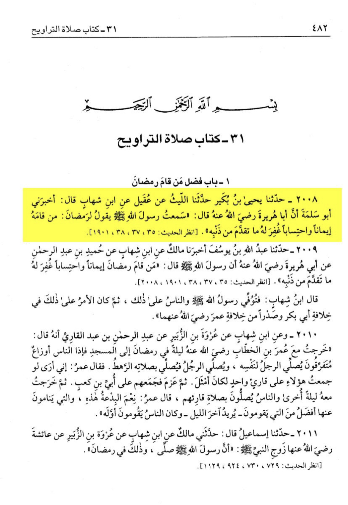
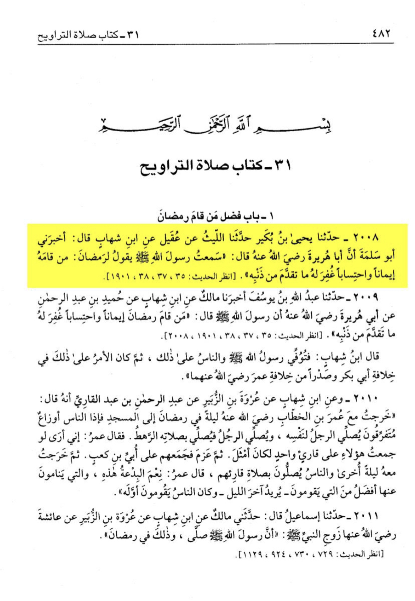

Shaykh al lslam Ibn Taymiyah عليه السلام stated:
the Messenger of Allah (صلى الله عليه وسلم) introduced Taraweeh to his ummah, and he led them in prayer
for a number of nights, because at his time they used to pray in congregation and individually.
But Allah messenger [صلى الله عليه وسلم] did not want to led the people in more one congregation,
because he didn’t want it to be obligatory for them. When the Prophet (صلى الله عليه وسلم) died,
the laws of Allah [سبحانه وتعالى] was established so [no one can make anything obligatory] so When
Imam Umar (عليه السلام) became caliph, he united them behind imam Ubayy ibn Ka’b [عليه السلام]
And the prophet [صلى الله عليه وسلم] said: hold on to my Sunnah and the Sunnah of the rightly guided khalifa after me
That’s proof the prophet led it in congregation
Narrated by Jabir (عليه السلام)
that Ubayy Ibn Kaab (عليه السلام) came to the Messenger of Allah (صلى الله عليه وسلم) and said
“I did something on the night of Ramadan” the Messenger of Allah [صلى الله عليه وسلم] said,
“What did you do?” he said, “Some women came to my house and said we don’t know much Quran
so we shall pray behind you and we will listen to the Quran.” “So I [Ubayy Ibn Kaab (عليه السلام)]
led them in 8 rakahs of prayer of Taraweeh and offered the Witr salah.” “The Messenger of Allah (صلى الله عليه وسلم)
remained silent and as if he approved it”
This is proof that the sahabas did it, and the prophet allowed it.

 
Youtube Link

Youtube Link